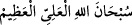
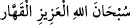
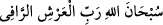

İsrâ ve Mîrâc gecesinde, Allah’ın insanı hayrette bırakan âyetlerinden birçok şeyler
gördüm. Bu cümleden olarak dünya semâsında bir de horoz gördüm. Bu horozun ince
tüyleri yeşil; diğer tüyleri beyazdı. Bu tüylerinin beyazlığı, gördüğüm beyazların en
parlağıydı. Yine bu tüylerinin altındaki yeşil tüyleri de gördüğüm yeşillerin en
koyusuydu. Ayakları, yedi kat yerin en alt sınırında, başı Arş-ı Rahmân’da, boynunun
ikinci boğumu arşın altında idi. Omuzlarında iki kanadı vardı, açtığında doğuyu da
batıyı da geçiyordu. Gecenin bir kısmı geçince kanatlarını açıp çırpıyor ve Allah’ı
tesbih ederek ötüyordu. Tesbihinde şöyle diyordu: “Sübhâne’l-melikü’l-kuddûs,
sübhânel kerîm” (Melik ve Kuddûs olan Allah’ı tesbih ederim, Kerîm olan Allah’ı
tesbih ederim!) Yahut şöyle diyordu: el-Kebîru’l-müteâl lâ ilâhe illallahü’l-hayy
(Allah Kebîr ve Müteâl’dir. Allah’dan başka ilah yoktur. O Hayy ve Kayyum’dur)”
Bu horoz böyle tesbih edince bütün yeryüzünün horozları da tesbih edip kanatlarını
çırparlardı. Durunca da bütün yeryüzünün horozları dururlardı. Sonra gecenin bir
kısmı geçince tekrar kanatlarını açar, kanatları doğudan ve batıdan ötelere geçerdi.
Kanatlarını yine çırpar, sonra Allah’ı tesbih ederek öter ve şöyle derdi:
 : Aliyyü’l-Azîm Allah’ı tesbih ederim.
 : Aliyyü’l-Azîm Allah’ı tesbih ederim.
 : Yüce Arş’ın sahibi olan Allah’ı tesbih ederim.
Bu horoz bunu söyleyince yeryüzünün bütün horozları da aynı sözlerle tesbih
ederler, kanatlarını çırparlar, ötmeye başlarlardı. Bu horoz durunca yeryüzünün
horozları da dururlardı. Sonra aynı şekilde gökteki horoz bu sözlerle tesbihe
başlayınca yerdeki horozlar da aynı sözlerle cevap vererek tesbihe başlarlardı.”[13]
Bunu anlatmaktan maksat şudur: Âyet-i celîle’deki “Hiçbir şey yoktur ki Allah’a
hamd ederek O’nu tesbih etmesin.” (el-İsrâ, 17/44) buyruğuna göre her şey Allah’ı
tesbih etmektedir. Tesbih, bütün gök ve yer ehlinin, özellikle dilsiz olan hayvanların ve
hattâ bitkilerin fiili olursa, insan daha fazla duâ ve tesbihe devam etmelidir. Özellikle
halvetlerde, yani yalnız kaldıkça ve seherlerde buna daha çok önem vermelidir.
İmam Kuşeyrî, bu âyet-i celîledeki “sabredenler”i, Allah’ın emrettiklerini yapmaya
sabredenler; “sâdıklar”ı, Allah ile yaptıkları sözleşmeye sâdık kalanlar; “kânitîn”i,
Allah’ı sevmekte istikamet sahibi olanlar; “infâk edenler”i, Allah yolunda mallarını
harcayanlar; “istiğfâr edenler”i, kusurlarını gördükleri için bütün yaptıklarından
istiğfâr edenler” olarak açıklamıştır.
[10]. İbn Mâce, Zühd, 39.
[11]. Zebîdî, İthâf, IX, 25
[12]. Buhârî, Teheccüd, 14; Müslim, S. Müsâfirîn, 168.